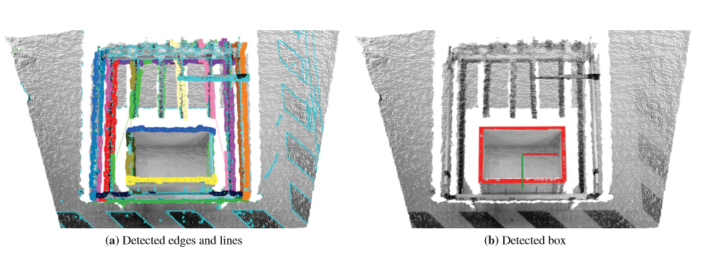
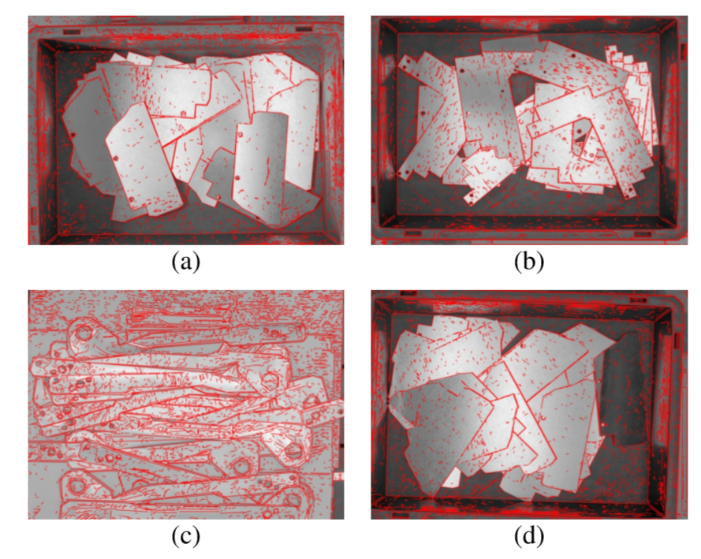
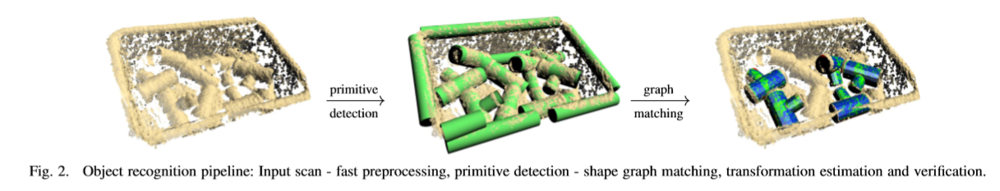
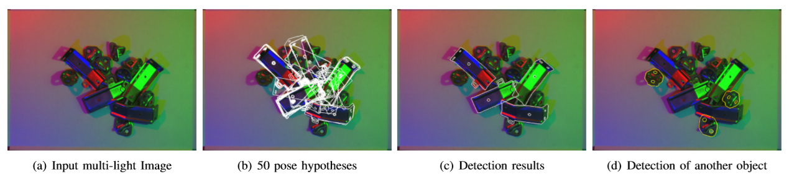
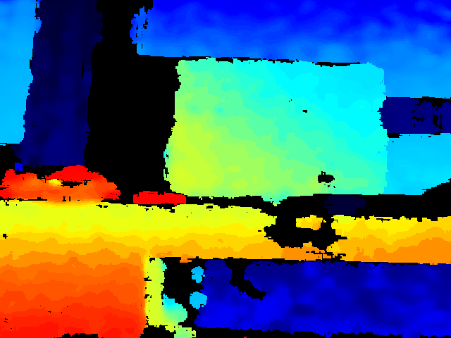

Presentation.
On October 10 we had our first NCRAI Meeting, in which every member of the NCRAI had to present their project subject and expected tasks for this semester.
Therefore part of this week was dedicated for the preparation of my presentation.
State of the art.
In order to write my project's state of the art and study what has already been done to solve the problems of bin-picking, I first started to read the Google Scholar Papers and thesis in this subject. Initially, I focused mainly in Papers that use the point cloud data obtained from a Depth Camera.
Various vision- and range finder-based bin picking frameworks have been developed and described in the literature. Early methods, used a 3D range scanner for object localization. This system uses geometric features, such as edges and discontinuities, found in the scans of the parts, to generate the hypothesis about the pose of the part. A visual bin picking system with a stereo camera was introduced in a paper. Here, visual cues are used to recognize the pose of complex objects. Visual features, such as circles, are utilized for recognizing the position and orientation of the object. This approach has a disadvantage that it is necessary to define these visual clues and their 3D geometric representation.


In a more recent paper, an object detection and pose estimation method based on shape matching with a known 3D model using a multi-flash camera is proposed. Multi-flash camera (MFC) is a digital camera surrounded by multiple (8) LEDs.This device is used to determine depth edges by capturing multiple images (one for each LED turned on). The depth edges are determined by comparing the difference in shadows in different images. The shape matching is done using Fast Directional Chamfer Matching.


First data acquisition from the Realsense D435.
In order to use the Intel Realsense D435, I firstly needed to install Realsense Viewer and Realsense driver by following these steps. Afterwards I was able to run Realsense on ROS and visualise it's data in Rviz and Realsense viewer.
Since I needed to process the data without being always connected to the Realsense I recorded it into a rosbag. In the next picture we can see a Depth Map.
